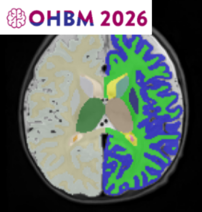
Open-science in Infant MRI: available infant MRI datasets and analysis pipelines
Organisation of Human Brain Mapping (OHBM) · 2026
DDSA postdoctoral fellow at LNN@UCPH, University of Copenhagen, and proudly an associate member of the Oxford Machine Learning NeuroImaging Lab (OMNI) with Prof Ana Namburete.
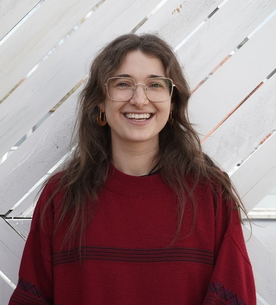
Research. I develop deep learning methods to monitor fetal and infant brain development, with a focus on early detection of cerebral palsy from neuroimaging. During my DPhil I built a fully automated pipeline to characterise healthy cortical development; I now study at-risk pregnancies and infants to see how their development diverges.

Organisation of Human Brain Mapping (OHBM) · 2026
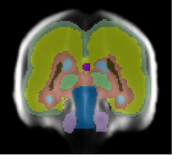
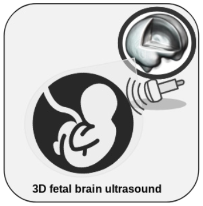
BMJ Research in Practice · 2026
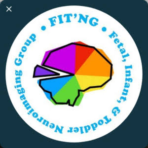
Developmental Cognitive Neuroscience · 2025
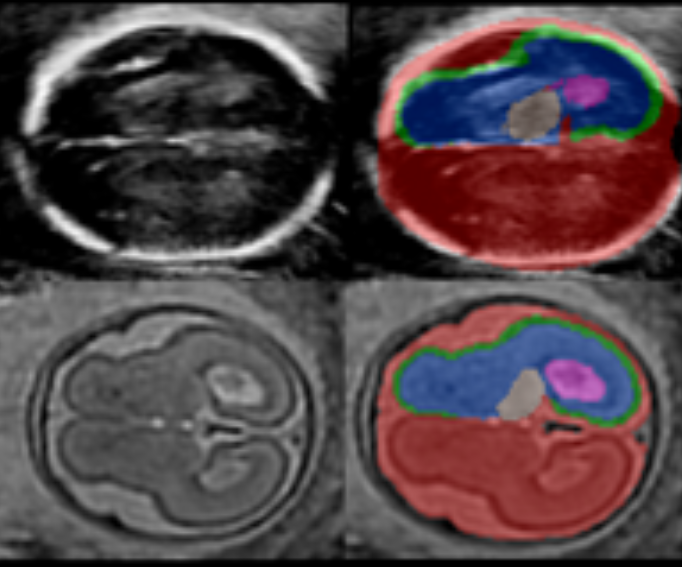
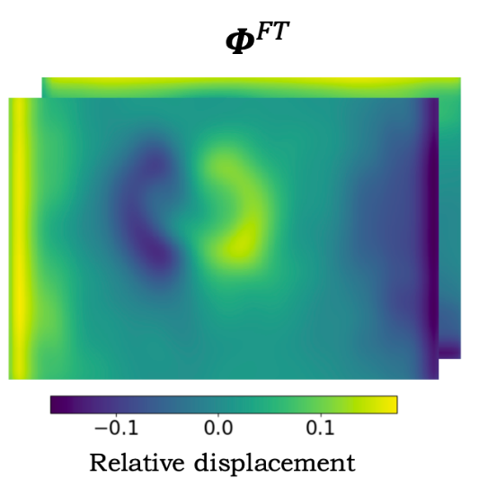
Medical Image Analysis · 2024
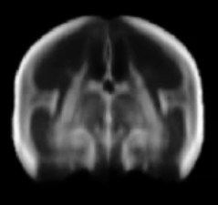
MICCAI · 2021 · Early Acceptance, Oral
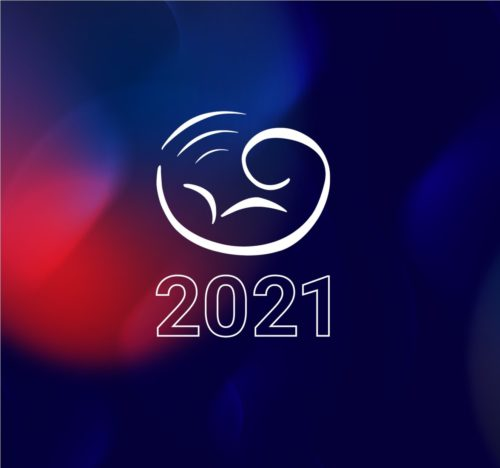
ISUOG · 2021 · Oral
ISUOG · 2021 · Oral
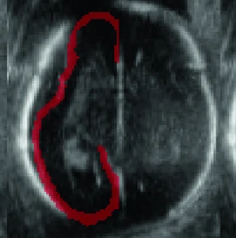
RSNA · 2020 · Poster
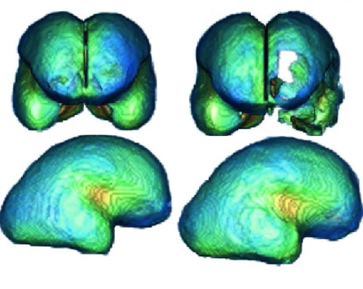